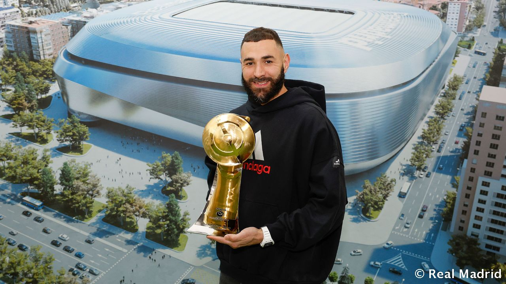
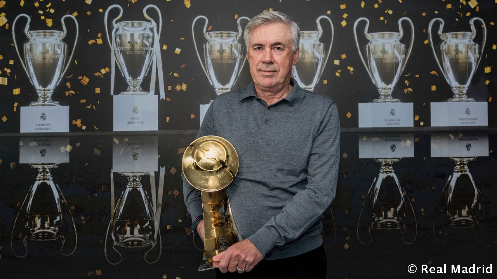
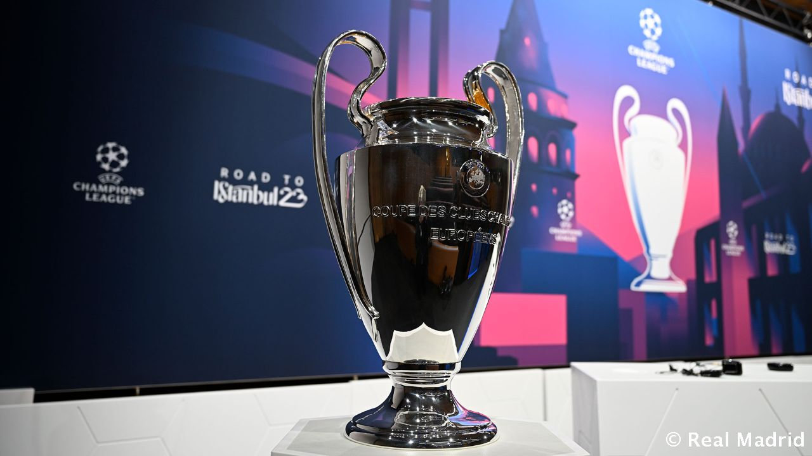

El delantero lideró al Real Madrid campeón de Champions, Liga, Supercopa de Europa y Supercopa de España. Karim Benzema recibió un nuevo reconocimiento a su espectacular 2022 en los Premios Globe Soccer, donde ha sido elegido mejor jugador del año. El capitán del Real Madrid, ganador del Balón de Oro y del Premio al Jugador del Año de la UEFA, lideró al equipo en la conquista de la Decimocuarta, la 35ª Liga, la 12ª Supercopa de España y la 5ª Supercopa de Europa. Benzema, que se impuso en la votación a Haaland y Salah, fue el máximo goleador de la Champions League (15 tantos), la Liga (27) y la Supercopa de España (2).
Carlo Ancelotti ha sido elegido mejor entrenador del año en la decimotercera edición de los Premios Globe Soccer, que se han entregado en Dubái. El técnico italiano ha ganado en 2022 con el Real Madrid la Champions League, la Liga, la Supercopa de Europa y la Supercopa de España. Además, se convirtió en el único entrenador de la historia con 4 Copas de Europa y en el primero que gana la Liga en los 5 grandes campeonatos (España, Alemania, Francia, Inglaterra e Italia). Ancelotti también ha ganado en 2022 el Premio al Entrenador del Año de la UEFA.
El Real Madrid se enfrentará al Liverpool en la eliminatoria de octavos de final de la Champions League tras el sorteo celebrado en la sede de la UEFA en Nyon. El partido de ida se disputará en Anfield el 21 de febrero, mientras que el de vuelta tendrá lugar en el Santiago Bernabéu el 15 de marzo. Los dos encuentros se jugarán a las 21:00 h. Segundo del Grupo A, igualado a 15 puntos con el Nápoles, el conjunto dirigido por Jurgen Klopp llega a octavos de final tras lograr un pleno de triunfos en su estadio y solo ceder fuera de casa frente al equipo italiano. Salah, con 7 dianas, es uno de los máximos goleadores de esta Champions. Real Madrid y Liverpool se han enfrentado en nueve ocasiones en la Copa de Europa, con un balance de cinco victorias madridistas, un empate y tres derrotas. El último precedente fue la final de la Decimocuarta.
